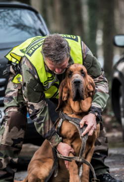

Qu'est ce que la Gendarmerie ?
La Gendarmerie nationale est une institution militaire qui garantit la sécurité et la paix de nos concitoyens, ainsi que la protection de leurs biens.

Comment rentrer au sein de la Gendarmerie ?
Pour rentrer en gendarmerie il faut passer un concours afin de rentrer en école. Le concours est passé en "externe" si vous n'avez pas déjà un pied dans le milieu. Pour ceux qui sont déja dans le milieu, comme les réservistes par exemple, ils peuvent passer le concours en "interne".
Pour devenir réserviste il faut faire une PMG (Prépartion Militaire de Gendarmerie) qui dure 2 semaines pendant les vacances scolaires.